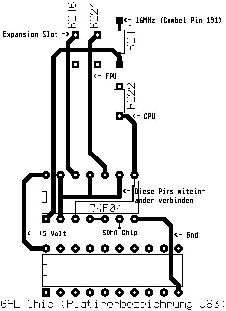

Previous
Next
TOC

Dazu muß kurz vor dem Pin 110 vom SDMA Chip (Platinenposition U36
unterhalb des Diskettenlaufwerkes) die Leiterbahn vorsichtig durch-
trennt werden wobei auch der grüne Lötstoplack vorsichtig auf der
Seite zum SDMA Chip hin entfernt werden muß. Nun muß eine eventuell
sogar abgeschirmte (die abschirmung dieser Leitung nur an einer
Seite mit der Masse der Hauptplatine verbinden durch Löten, niemals
eine abschirmung an beiden Seiten anschliessen da ansonsten ein
Störstrom innerhalb der Abschirmung durch Potentialdifferenzen ent-
stehen kann, welcher unerfreulicherweise wiederum eine Störspannung
auf die Signalleitung des abgeschirmten Kabels induzieren könnte!)
Leitung vom Punkt SDMA Chip am 74F04 IC zu dieser freigelegten Lei-
terbahn verlegt und angelötet werden.
weiterblättern
Kapitel Der Clockpatch aus der ST-Computer Zeitschrift, Seite 4